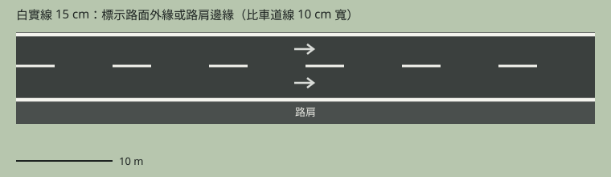

路面邊線 第183條
標示路肩或路面外側邊緣。

規格
| 類別 | 指示標線 |
|---|---|
| 顏色 | 白 |
| 線型 | 實線 |
| 尺寸 | 白實線，線寬 15 公分，整段設置。 |
意義
標示路肩或路面外側邊緣。
設置地點
整段設置；交岔路口、已設禁止停車線或禁止臨時停車線處、或有人行道的路段免設。
跨越或通行
標示路面外緣；路肩能否行駛另依各道路管制規定。（整理說明）
常見誤解
- 路面邊線線寬 15 公分，比車道線（10 公分）寬。
出處
道路交通標誌標線號誌設置規則（民國115年03月11日修正）第183條。全國法規資料庫原文
本頁為條文整理，用字以原文為準；標「整理說明」者為本站補充。最後更新：2026-11-13